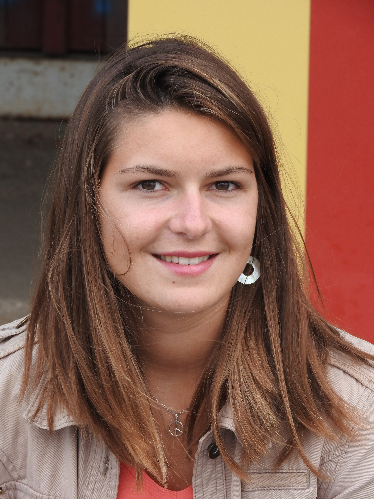
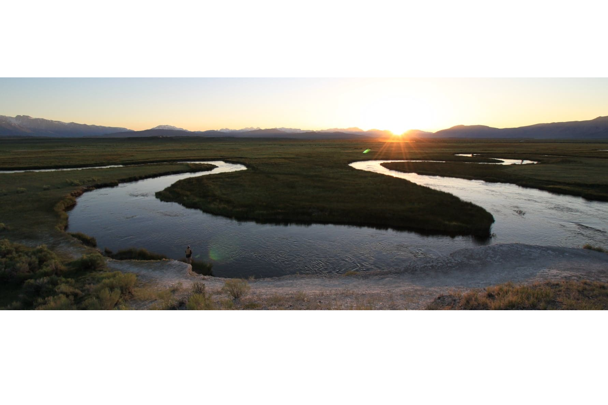

amaia.lamarins@helsinki.fi
Postdoctoral researcher
I am postdoctoral researcher studying blabla.I am postdoctoral researcher studying blabla.I am postdoctoral researcher studying blabla. I am postdoctoral researcher studying blabla.I am postdoctoral researcher studying blabla.I am postdoctoral researcher studying blabla. I am postdoctoral researcher studying blabla.I am postdoctoral researcher studying blabla.I am postdoctoral researcher studying blabla. I am postdoctoral researcher studying blabla.I am postdoctoral researcher studying blabla.I am postdoctoral researcher studying blabla. I am postdoctoral researcher studying blabla.I am postdoctoral researcher studying blabla.I am postdoctoral researcher studying blabla. I am postdoctoral researcher studying blabla.I am postdoctoral researcher studying blabla.I am postdoctoral researcher studying blabla.
University of Helsinki, Finland and University of Cambridge, UK. Predator Prey Interactions group.
one paragraph.
another one.
The University of Sheffield, UK. Nadeau Lab.
projet thesis. Thesis, 2022